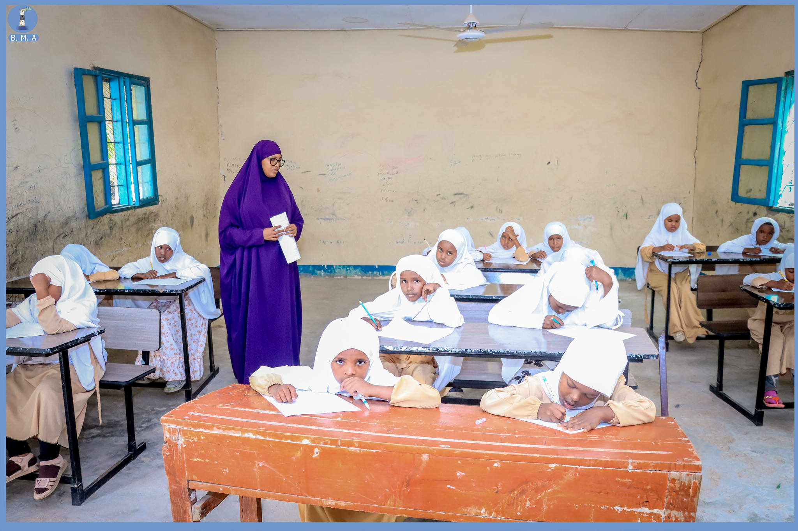
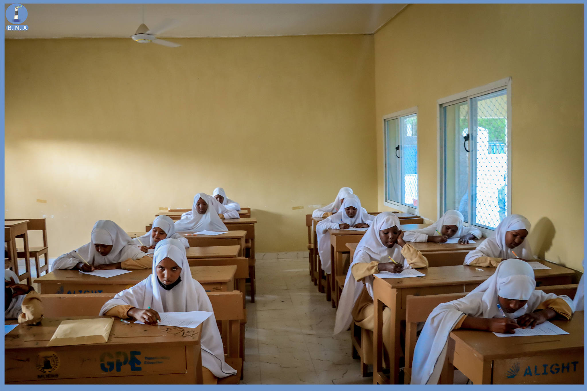

Waa Xudunta Waxbarasho ee Dugsiyada Degmada waana halkay Wax ka Dhaqaaqan
Waxa Dhigta Arday dhan 265 Arday sido kale waxa ka hawl gala (1) Maamule (12) Macalin, (2) ilaaliye (2) Nadiifiso
Waxa Dhigta Arday dhan 282 Arday sido kale waxa ka hawl gala (1) Maamule (16) Macalin, (2) ilaaliye (2) Nadiifiso
Waxa Dhigta Arday dhan 247 Arday sido kale waxa ka hawl gala (1) Maamule (10) Macalin, (2) ilaaliye (2) Nadiifiso
Waxa Dhigta Arday dhan 334 Arday sido kale waxa ka hawl gala (1) Maamule (19) Macalin, (2) ilaaliye (2) Nadiifiso
Waxa Dhigta Arday dhan 222 Arday sido kale waxa ka hawl gala (1) Maamule (12) Macalin, (2) ilaaliye (2) Nadiifiso
Waxa Dhigta Arday dhan 352 Arday sido kale waxa ka hawl gala (1) Maamule (18) Macalin, (2) ilaaliye (2) Nadiifiso
waa waxbarashadi tooska ahayd ee dugsiyada hoose dhexe.
Waa waxbarashada ka baxsan dugsiyada waxa ka mida sida "BARISTA AASAASKA COMPUTERKA, DAWAARKA, CUNTO KARINTA, AKHRIS QORAALKA DADKA WAA WEYN" .
Waa waxbarashda dadka waa weyn waxyaabaha ay dhigtaana waxa ka mida Akhriska iyo qoraalka

Dugsi bixiya waxbarashada hoose iyo dhexe

Dugsi bixiya waxbarashada hoose iyo dhexe

Dugsi bixiya waxbarashada hoose iyo dhexe